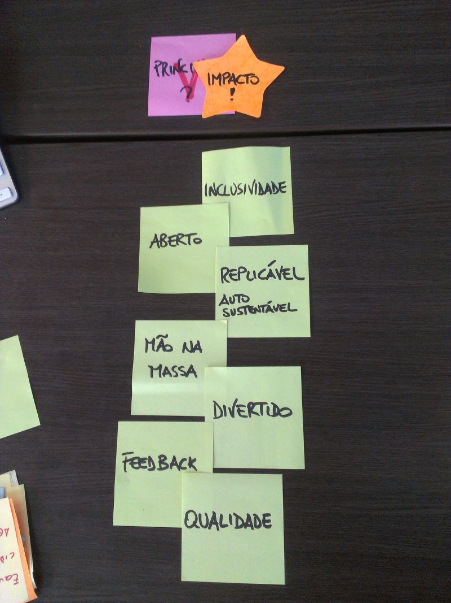

Comunidade
O evento e a comunidade de "Programação Insubordinada" é baseada sobre 7 princípios fundamentais:
Aberto
Queremos conteúdo aberto, software livre e organização transparente.
Ajude na participação da organizacão no nosso forum: https://groups.google.com/forum/#!forum/programacao-insubordinada
Replicável e auto-sustentável
Queremos que a organização seja suportada por cada voluntário, não como so mais um parceiro.
Sentimos orgulho em cada "fork" de essa idéia :)
Inclusão
Queremos promover a diversidade e a inclusão na tecnologia.
Se você é um homem branco de classe média, agradecemos se puder compartilhar esse evento e convidar mulheres, pessoas negras, de classe baixa ou outras minorias que são menos representadas na tecnologia.
Mão na massa
Queremos aprender compartilhando experiências reais.
Feedback
Acreditamos que o feedback è um ingrediente fundamental para aprender e melhorar contínuamente, reconhecendo os nossos erros e escutando a prespectiva dos outros.
Qualidade
Nós pensamos que o impacto das nossas soluções é amplificado pela qualidade da nossa execução.
Divertido
:)
